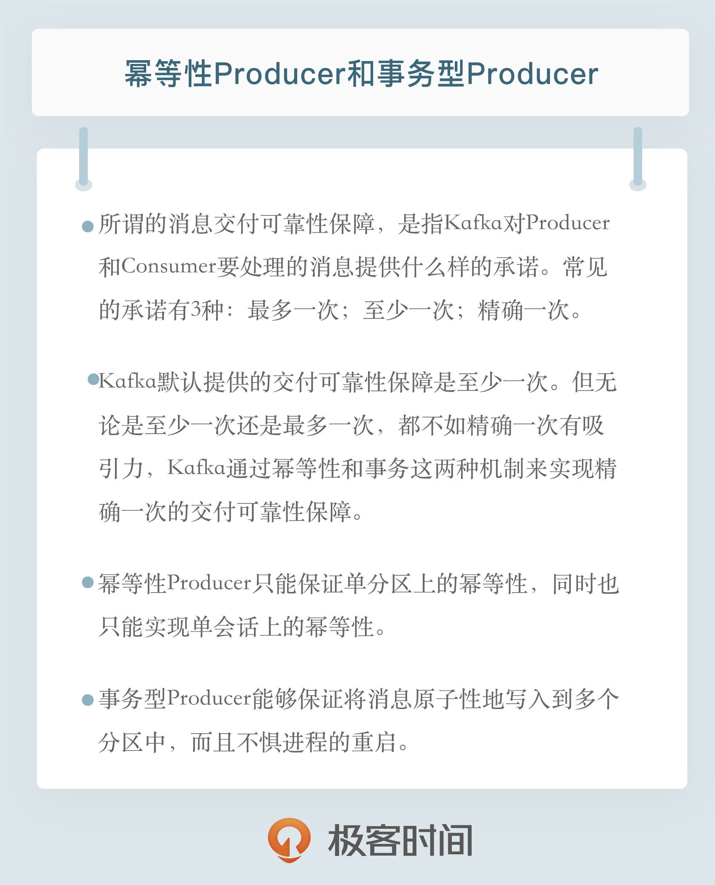

- 00 开篇词 为什么要学习Kafka？.md.html
- 01 消息引擎系统ABC.md.html
- 02 一篇文章带你快速搞定Kafka术语.md.html
- 03 Kafka只是消息引擎系统吗？.md.html
- 04 我应该选择哪种Kafka？.md.html
- 05 聊聊Kafka的版本号.md.html
- 06 Kafka线上集群部署方案怎么做？.md.html
- 07 最最最重要的集群参数配置（上）.md.html
- 08 最最最重要的集群参数配置（下）.md.html
- 09 生产者消息分区机制原理剖析.md.html
- 10 生产者压缩算法面面观.md.html
- 11 无消息丢失配置怎么实现？.md.html
- 12 客户端都有哪些不常见但是很高级的功能？.md.html
- 13 Java生产者是如何管理TCP连接的？.md.html
- 14 幂等生产者和事务生产者是一回事吗？.md.html
- 15 消费者组到底是什么？.md.html
- 16 揭开神秘的“位移主题”面纱.md.html
- 17 消费者组重平衡能避免吗？.md.html
- 18 Kafka中位移提交那些事儿.md.html
- 19 CommitFailedException异常怎么处理？.md.html
- 20 多线程开发消费者实例.md.html
- 21 Java 消费者是如何管理TCP连接的_.md.html
- 22 消费者组消费进度监控都怎么实现？.md.html
- 23 Kafka副本机制详解.md.html
- 24 请求是怎么被处理的？.md.html
- 25 消费者组重平衡全流程解析.md.html
- 26 你一定不能错过的Kafka控制器.md.html
- 27 关于高水位和Leader Epoch的讨论.md.html
- 28 主题管理知多少_.md.html
- 29 Kafka动态配置了解下？.md.html
- 30 怎么重设消费者组位移？.md.html
- 31 常见工具脚本大汇总.md.html
- 32 KafkaAdminClient：Kafka的运维利器.md.html
- 33 Kafka认证机制用哪家？.md.html
- 34 云环境下的授权该怎么做？.md.html
- 35 跨集群备份解决方案MirrorMaker.md.html
- 36 你应该怎么监控Kafka？.md.html
- 37 主流的Kafka监控框架.md.html
- 38 调优Kafka，你做到了吗？.md.html
- 39 从0搭建基于Kafka的企业级实时日志流处理平台.md.html
- 40 Kafka Streams与其他流处理平台的差异在哪里？.md.html
- 41 Kafka Streams DSL开发实例.md.html
- 42 Kafka Streams在金融领域的应用.md.html
- 加餐 搭建开发环境、阅读源码方法、经典学习资料大揭秘.md.html
- 用户故事 黄云：行百里者半九十.md.html
- 结束语 以梦为马，莫负韶华！.md.html
- 捐赠
14 幂等生产者和事务生产者是一回事吗？
你好，我是胡夕。今天我要和你分享的主题是：Kafka消息交付可靠性保障以及精确处理一次语义的实现。
所谓的消息交付可靠性保障，是指Kafka对Producer和Consumer要处理的消息提供什么样的承诺。常见的承诺有以下三种：
- 最多一次（at most once）：消息可能会丢失，但绝不会被重复发送。
- 至少一次（at least once）：消息不会丢失，但有可能被重复发送。
- 精确一次（exactly once）：消息不会丢失，也不会被重复发送。
目前，Kafka默认提供的交付可靠性保障是第二种，即至少一次。在专栏第11期中，我们说过消息“已提交”的含义，即只有Broker成功“提交”消息且Producer接到Broker的应答才会认为该消息成功发送。不过倘若消息成功“提交”，但Broker的应答没有成功发送回Producer端（比如网络出现瞬时抖动），那么Producer就无法确定消息是否真的提交成功了。因此，它只能选择重试，也就是再次发送相同的消息。这就是Kafka默认提供至少一次可靠性保障的原因，不过这会导致消息重复发送。
Kafka也可以提供最多一次交付保障，只需要让Producer禁止重试即可。这样一来，消息要么写入成功，要么写入失败，但绝不会重复发送。我们通常不会希望出现消息丢失的情况，但一些场景里偶发的消息丢失其实是被允许的，相反，消息重复是绝对要避免的。此时，使用最多一次交付保障就是最恰当的。
无论是至少一次还是最多一次，都不如精确一次来得有吸引力。大部分用户还是希望消息只会被交付一次，这样的话，消息既不会丢失，也不会被重复处理。或者说，即使Producer端重复发送了相同的消息，Broker端也能做到自动去重。在下游Consumer看来，消息依然只有一条。
那么问题来了，Kafka是怎么做到精确一次的呢？简单来说，这是通过两种机制：幂等性（Idempotence）和事务（Transaction）。它们分别是什么机制？两者是一回事吗？要回答这些问题，我们首先来说说什么是幂等性。
什么是幂等性（Idempotence）？
“幂等”这个词原是数学领域中的概念，指的是某些操作或函数能够被执行多次，但每次得到的结果都是不变的。我来举几个简单的例子说明一下。比如在乘法运算中，让数字乘以1就是一个幂等操作，因为不管你执行多少次这样的运算，结果都是相同的。再比如，取整函数（floor和ceiling）是幂等函数，那么运行1次floor(3.4)和100次floor(3.4)，结果是一样的，都是3。相反地，让一个数加1这个操作就不是幂等的，因为执行一次和执行多次的结果必然不同。
在计算机领域中，幂等性的含义稍微有一些不同：
- 在命令式编程语言（比如C）中，若一个子程序是幂等的，那它必然不能修改系统状态。这样不管运行这个子程序多少次，与该子程序关联的那部分系统状态保持不变。
- 在函数式编程语言（比如Scala或Haskell）中，很多纯函数（pure function）天然就是幂等的，它们不执行任何的side effect。
幂等性有很多好处，其最大的优势在于我们可以安全地重试任何幂等性操作，反正它们也不会破坏我们的系统状态。如果是非幂等性操作，我们还需要担心某些操作执行多次对状态的影响，但对于幂等性操作而言，我们根本无需担心此事。
幂等性Producer
在Kafka中，Producer默认不是幂等性的，但我们可以创建幂等性Producer。它其实是0.11.0.0版本引入的新功能。在此之前，Kafka向分区发送数据时，可能会出现同一条消息被发送了多次，导致消息重复的情况。在0.11之后，指定Producer幂等性的方法很简单，仅需要设置一个参数即可，即props.put(“enable.idempotence”, ture)，或props.put(ProducerConfig.ENABLE_IDEMPOTENCE_CONFIG， true)。
enable.idempotence被设置成true后，Producer自动升级成幂等性Producer，其他所有的代码逻辑都不需要改变。Kafka自动帮你做消息的重复去重。底层具体的原理很简单，就是经典的用空间去换时间的优化思路，即在Broker端多保存一些字段。当Producer发送了具有相同字段值的消息后，Broker能够自动知晓这些消息已经重复了，于是可以在后台默默地把它们“丢弃”掉。当然，实际的实现原理并没有这么简单，但你大致可以这么理解。
看上去，幂等性Producer的功能很酷，使用起来也很简单，仅仅设置一个参数就能保证消息不重复了，但实际上，我们必须要了解幂等性Producer的作用范围。
首先，它只能保证单分区上的幂等性，即一个幂等性Producer能够保证某个主题的一个分区上不出现重复消息，它无法实现多个分区的幂等性。其次，它只能实现单会话上的幂等性，不能实现跨会话的幂等性。这里的会话，你可以理解为Producer进程的一次运行。当你重启了Producer进程之后，这种幂等性保证就丧失了。
那么你可能会问，如果我想实现多分区以及多会话上的消息无重复，应该怎么做呢？答案就是事务（transaction）或者依赖事务型Producer。这也是幂等性Producer和事务型Producer的最大区别！
事务
Kafka的事务概念类似于我们熟知的数据库提供的事务。在数据库领域，事务提供的安全性保障是经典的ACID，即原子性（Atomicity）、一致性(Consistency)、隔离性(Isolation)和持久性(Durability)。
当然，在实际场景中各家数据库对ACID的实现各不相同。特别是ACID本身就是一个有歧义的概念，比如对隔离性的理解。大体来看，隔离性非常自然和必要，但是具体到实现细节就显得不那么精确了。通常来说，隔离性表明并发执行的事务彼此相互隔离，互不影响。经典的数据库教科书把隔离性称为可串行化(serializability)，即每个事务都假装它是整个数据库中唯一的事务。
提到隔离级别，这种歧义或混乱就更加明显了。很多数据库厂商对于隔离级别的实现都有自己不同的理解，比如有的数据库提供Snapshot隔离级别，而在另外一些数据库中，它们被称为可重复读（repeatable read）。好在对于已提交读（read committed）隔离级别的提法，各大主流数据库厂商都比较统一。所谓的read committed，指的是当读取数据库时，你只能看到已提交的数据，即无脏读。同时，当写入数据库时，你也只能覆盖掉已提交的数据，即无脏写。
Kafka自0.11版本开始也提供了对事务的支持，目前主要是在read committed隔离级别上做事情。它能保证多条消息原子性地写入到目标分区，同时也能保证Consumer只能看到事务成功提交的消息。下面我们就来看看Kafka中的事务型Producer。
事务型Producer
事务型Producer能够保证将消息原子性地写入到多个分区中。这批消息要么全部写入成功，要么全部失败。另外，事务型Producer也不惧进程的重启。Producer重启回来后，Kafka依然保证它们发送消息的精确一次处理。
设置事务型Producer的方法也很简单，满足两个要求即可：
- 和幂等性Producer一样，开启enable.idempotence = true。
- 设置Producer端参数transactional. id。最好为其设置一个有意义的名字。
此外，你还需要在Producer代码中做一些调整，如这段代码所示：
producer.initTransactions();
try {
producer.beginTransaction();
producer.send(record1);
producer.send(record2);
producer.commitTransaction();
} catch (KafkaException e) {
producer.abortTransaction();
}
和普通Producer代码相比，事务型Producer的显著特点是调用了一些事务API，如initTransaction、beginTransaction、commitTransaction和abortTransaction，它们分别对应事务的初始化、事务开始、事务提交以及事务终止。
这段代码能够保证Record1和Record2被当作一个事务统一提交到Kafka，要么它们全部提交成功，要么全部写入失败。实际上即使写入失败，Kafka也会把它们写入到底层的日志中，也就是说Consumer还是会看到这些消息。因此在Consumer端，读取事务型Producer发送的消息也是需要一些变更的。修改起来也很简单，设置isolation.level参数的值即可。当前这个参数有两个取值：
- read_uncommitted：这是默认值，表明Consumer能够读取到Kafka写入的任何消息，不论事务型Producer提交事务还是终止事务，其写入的消息都可以读取。很显然，如果你用了事务型Producer，那么对应的Consumer就不要使用这个值。
- read_committed：表明Consumer只会读取事务型Producer成功提交事务写入的消息。当然了，它也能看到非事务型Producer写入的所有消息。
小结
简单来说，幂等性Producer和事务型Producer都是Kafka社区力图为Kafka实现精确一次处理语义所提供的工具，只是它们的作用范围是不同的。幂等性Producer只能保证单分区、单会话上的消息幂等性；而事务能够保证跨分区、跨会话间的幂等性。从交付语义上来看，自然是事务型Producer能做的更多。
不过，切记天下没有免费的午餐。比起幂等性Producer，事务型Producer的性能要更差，在实际使用过程中，我们需要仔细评估引入事务的开销，切不可无脑地启用事务。

开放讨论
你理解的事务是什么呢？通过今天的分享，你能列举出未来可能应用于你们公司实际业务中的事务型Producer使用场景吗？
欢迎写下你的思考和答案，我们一起讨论。如果你觉得有所收获，也欢迎把文章分享给你的朋友。
© 2019 - 2023 Liangliang Lee. Powered by gin and hexo-theme-book.